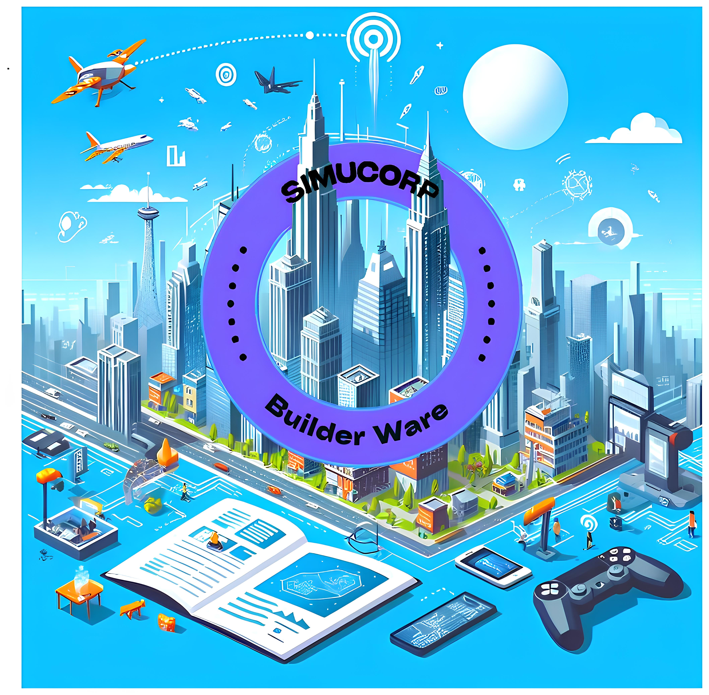

Accueil
Description
SIMUCORP est un jeu de stratégie pour deux joueurs qui gèrent des entreprises. Les joueurs choisissent entre gérer un magasin de produits non périssables (mode facile) ou un magasin agro-alimentaire (mode difficile). Le jeu est au tour par tour avec des éléments aussi bien à l'avantage qu'à l'encontre des joueurs. Il offre une ambiance rétro avec des graphiques 2D et des musiques originales. Venez tester vos compétences en gestion d'entreprise avec SIMUCORP !


Règles
Insérez ici les règles du jeu vidéo.
Qui sommes-nous
Matthieu Suchet

Louis Courault
Alexis Mialon
Matthieu Humbert

Lucas Bigot
-Matthieu Suchet, passionné de numérique et de jeux de gestion, il a travaillé sur les menus, les settings et les crédits.
-Louis Courault, passionné de numérique, d'art et de musique, il a travaillé sur la Direction Artistique, musicale et les graphismes ainsi que le site.
-Alexis Mialon, sa détérmination à résoudre des problèmes l'a amené vers une nouvelle manière d'aborder les maths et l'informatique. Il a donc travaillé sur l'IA, l'implémentation des classes et le coding du jeu Simucorp.
-Matthieu Humbert, passioné de jeux vidéo et algorithmique il est responsable du coding du jeu avec Alexis.
-Lucas Bigot, passionné par l'informatique et les jeux de gestion, il s'est occupé du multi sur le jeu ainsi que des menus avec Matthieu Suchet.